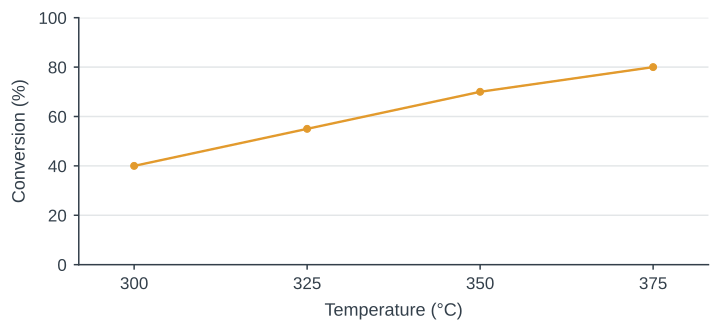
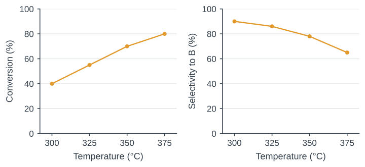
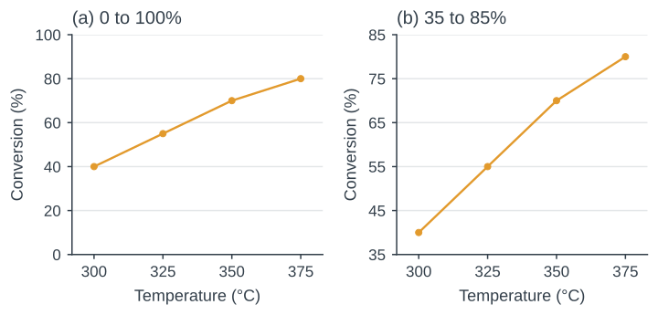

Writing Results and Data Visualization
Week 8 · 2105620 Research Communication Skills for Chemical Engineers · 09:00–12:00
8 October 2026
Is conversion enough?

Write one sentence, then discuss: what other measurement would you want?
The reaction case
- A forms desired product B and by-products.
- Residence time is fixed at 2.0 s.
- Temperature varies from 300 to 375 °C.
- All values are synthetic teaching data.
Evidence for the first sentence
| Temperature (°C) | Conversion (%) | Selectivity to B (%) |
|---|---|---|
| 300 | 40 ± 2 | 90 ± 1 |
| 325 | 55 ± 2 | 86 ± 1 |
| 350 | 70 ± 2 | 78 ± 1 |
| 375 | 80 ± 2 | 65 ± 1 |
Mean ± sample SD, n = 3 independent runs per temperature. Synthetic data.
Today’s writing task
- A Results paragraph of 120–180 words
- A figure sketch and a caption of 40–70 words
- A revision based on a partner’s feedback
Definitions for this case
Conversion = A consumed / A fed × 100%
Selectivity = B formed / A consumed × 100%
Assumption: one mole of A can form one mole of B.
Yield = conversion × selectivity / 100
Observation, implication and hypothesis
Observation
Mean conversion increased from 40% to 80% between 300 and 375 °C.
Implication
Conversion alone cannot decide the operating condition because selectivity also changes.
Hypothesis
Competing pathways may contribute to the trade-off. The present data do not test this explanation.
The structure of a Results paragraph
Finding
Conversion increased with temperature, while selectivity to B decreased.
Evidence
From 300 to 375 °C, conversion rose by 40 percentage points and selectivity fell by 25.
Scope
The comparison applies at a residence time of 2.0 s over the tested temperature range.
Percent and percentage points
Conversion changes from 40% to 80%.
| Change | Calculation |
|---|---|
| +40 percentage points | 80 − 40 = 40 |
| +100% relative to the initial value | (80 − 40) / 40 × 100 = 100% |
Quick check: selectivity changes from 90% to 65%. State both changes.
One quantitative sentence
- Include the temperature range and the residence time.
- State a direction and its magnitude.
- Keep the sentence within what the data show.
A claim that needs revision
Temperature dramatically improved reactor performance.
Conversion increased significantly, proving that the catalyst became more active.
Therefore, 375 °C is optimal for industrial operation.
Deliberately flawed example for critique.
What evidence is missing?
- “Dramatically” needs a stated magnitude.
- “Significantly” needs a defined statistical basis.
- Catalyst activity needs additional measurements.
- Industrial optimum needs an objective and constraints.
A revision grounded in the measurements
At a residence time of 2.0 s, mean conversion increased from 40% at 300 °C to 80% at 375 °C.
Mean selectivity to B decreased from 90% to 65% over the same range.
These measurements show a trade-off between conversion and selectivity.
The question determines the display
| Question | Useful display |
|---|---|
| How does response vary with temperature? | Scatter plot, optionally with connecting lines |
| How variable are repeated runs? | Individual points with a defined summary |
| What are the exact values? | A table with units and uncertainty |
Connecting lines guide the eye unless a fitted model is explicitly stated.
Conversion rises while selectivity falls

Synthetic means at a residence time of 2.0 s. Variability omitted here for the design exercise.
Break
15 minutes
Resume at 10:30
Axis limits change the visual impression

Same conversion means in both panels. Axis limits must remain visible.
Independent runs and repeated readings
n = 3 means three independent runs in this exercise.
Three readings from one run do not establish three independent experiments.
The sampling unit belongs in the caption.
Sample SD describes variation between runs
Run values: at 300 °C, conversion is 38%, 40% and 42%.
Summary: mean = 40%. Sample SD = 2 percentage points.
Report as mean ± SD: (40 ± 2)%.
Meaning: the bars describe spread across three runs. Their overlap alone does not test statistical significance.
Means with sample SD

Synthetic data, n = 3 independent runs per temperature. Bars show ±1 sample SD.
A caption makes the figure interpretable
- System and variable: temperature in the hypothetical reaction
- Conditions: residence time 2.0 s
- Display: points are means, bars are ±1 sample SD
- Replication: three independent runs per temperature
A caption linked to the marks on the figure
What and where
Figure 1. Conversion of A (left) and selectivity to B (right) versus temperature at a residence time of 2.0 s.
Summary and n
Points are means of three independent runs per temperature. Bars show ±1 sample SD.
Other marks
Lines guide the eye. The data are synthetic and were constructed for teaching.
Writing workshop
35 minutes
- First 10 min: sketch Figure 1 with labels, units and defined error bars.
- Next 20 min: write Results (120–180 words) and a caption (40–70 words).
- Last 5 min: underline the finding and check every numerical claim.
Peer review
20 minutes
- Read your partner’s paragraph and figure for 5 minutes.
- Write two specific revisions: identify the sentence and explain the issue.
- Discuss which revision most improves the match between claim and evidence.
Results with a clear finding and scope
Finding
At a residence time of 2.0 s, conversion increased with temperature while selectivity to B decreased.
Magnitude
From 300 to 375 °C, mean conversion rose by 40 percentage points and selectivity fell by 25.
Scope
The measurements show a conversion–selectivity trade-off within the tested range.
Exit ticket
10 minutes
- Submit the revised Results paragraph and caption.
- State one supported finding and one conclusion the data cannot establish.
- Identify one sentence you changed after peer review and explain why.
Before you go · 45 seconds
How was today?
Five questions. Anonymous : no name, no email, no login.
The fourth question is the one I actually use.
The two most common answers open next week’s session.
oxidized-challenge-ed9.notion.site

Scan now : I will wait